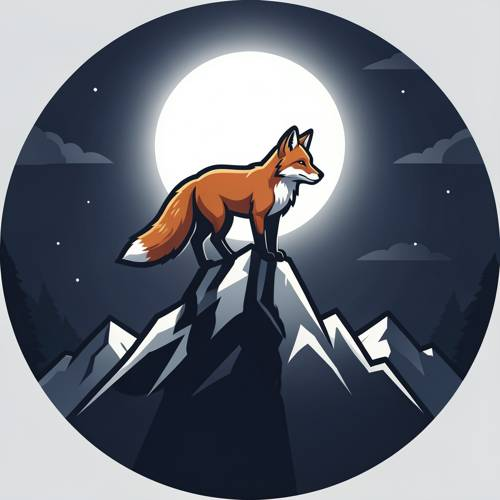
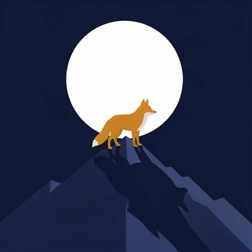

Grammar — Design a logo: A fox is standing on the top of the mountain. The moonl
Design a logo: A fox is standing on the top of the mountain. The moonlight is very bright, so its shadow is drawn long.

Direct — one call, no iteration

Continuum — Qwen3.8-27B + FLUX.2-klein-9B
Judge — Direct
FAILGrammar - Pronoun Reference — The pronoun 'its' refers to the fox's shadow. The image depicts a fox standing on a mountain with a bright moon behind it. However, there is no visible shadow cast by the fox on the mountain surface.
FAILLogical Reasoning — The prompt establishes a logical connection: because the moonlight is bright, the fox's shadow should be long. The image shows a bright moon behind the fox, but it does not depict any shadow cast by the fox, let alone a long one, on the mountain.
Judge — Continuum
PASSGrammar - Pronoun Reference — The pronoun 'its' in the prompt refers to the fox. The image shows an orange fox standing on a mountain peak, and a dark shadow corresponding to the shape of the fox is cast from its feet down the mountainside. Therefore, the image correctly visualizes 'its shadow'.
PASSLogical Reasoning — The prompt describes a logical cause-and-effect: the bright moonlight causes the fox's shadow to be long. The image depicts a large, bright, white circle in the sky behind the fox, representing bright moonlight. This light source is positioned behind the fox, and as a result, a long shadow of the fox is cast down the mountain in the foreground. The visual representation aligns with the physical principle that a strong backlight creates a long shadow.
What the agent did
Thinking
The user is asking for a logo design: a fox standing on top of a mountain, bright moonlight casting a long shadow. Let me generate this with flux2-klein as instructed. Logo design — should be clean, with strong silhouettes, minimal details, with a clear composition. Let me write a good prompt: "Minimalist logo design, fox silhouette standing on the peak of a mountain, bright full moon behind/above, long shadow of the fox stretching across the mountainside, clean vector style, dark blue night sky, single color palette, flat design, logo composition" Let me generate the image first.
Step 1 — `generate_image`
{
"prompt": "Minimalist logo design of a fox standing on top of a mountain peak. A large bright full moon hangs high in a dark night sky, and the strong moonlight casts the fox's shadow very long, stretching far across the sloping mountainside below. Clean flat vector style, simple geometric shapes, limited palette of deep navy blue, midnight indigo, and a warm amber-gold fox against the pale moon. Silhouette-based emblem composition, generous negative space, crisp edges, professional brand logo, no text.",
"model": "flux2-klein",
"width": 1024,
"height": 1024
}
Result img_0
Thinking
Image has been generated. Let's evaluate: - Fox standing on top of a mountain: Yes, a fox is standing on the peak. - Bright moonlight: Yes, a big bright full moon behind. - Long shadow: The fox's shadow stretches long across the mountainside below — yes, a long dark shadow is visible extending downward from the fox's feet. - Logo style: Clean flat vector style, good palette, no text. Looks pretty good as a logo. Checking details — the shadow is long, stretching across the slope. The fox is nicely silhouetted against the moon. The composition is clean and logo-like. Let me zoom in on a few regions to check the quality: the fox's shape and the long shadow. The image is 1024x1024. I can inspect the shadow region to confirm it's a proper fox shadow and not a blob. Actually, it already looks good. Let me do a quick inspection of the fox/shadow region to verify the details before marking it as the best.
On the close-up: the fox is standing on the mountaintop, and the long shadow of the fox is stretching down the slope of the mountain — the shadow clearly reads as a long fox silhouette extending downward. The moon is bright behind the fox. This satisfies all the requirements: - Fox standing on the mountaintop ✓ - Bright moonlight ✓ - Long shadow ✓ - Logo style: clean flat vector, limited color palette, no text ✓ This is a good logo. Let me mark this as the best and stop. The shadow in the lower right of the crop shows a fox-shape shadow stretching downward — it's quite long. One thing that could potentially be improved: the shadow could be made even more clearly a "fox shape" and longer, but it's already quite readable and it's in logo style. This is good enough as a stop condition. I'll mark img_0 as the best.
Model
The close-up confirms the design reads well: a crisp flat-vector fox on the summit, with its silhouette shadow stretched long down the mountainside, and the bright moon backlighting it. All the requested elements are present and clean — this works as a logo.
Step 3 — `mark_best`
{
"image": "img_0",
"reason": "Clean minimalist logo: fox standing on the mountain peak, bright full moon, and the fox's shadow stretched long across the slope. Flat vector style with a limited palette, no text \u2014 meets all prompt requirements."
}
Thinking
Complete. Marked the best. Now I'll explain the result to the user.
Model
Here's your logo (img_0, marked as best): **Design details:** - **Fox on the summit** — a clean amber-gold fox stands at the very peak, silhouetted against the moon - **Bright moonlight** — a large pale full moon dominates the upper frame, creating strong backlighting - **Long shadow** — the fox's shadow is cast far down the mountainside, stretching across the slope as a dark silhouette, exactly as bright moonlight near the horizon would do - **Logo treatment** — flat vector style, geometric shapes, a restrained palette (deep navy, midnight indigo, amber-gold), and generous negative space so it scales down well for branding use, with no text If you'd like variations — e.g., a circular badge version, a single-color silhouette, the fox facing the other way, or a longer/shorter shadow — just say the word.